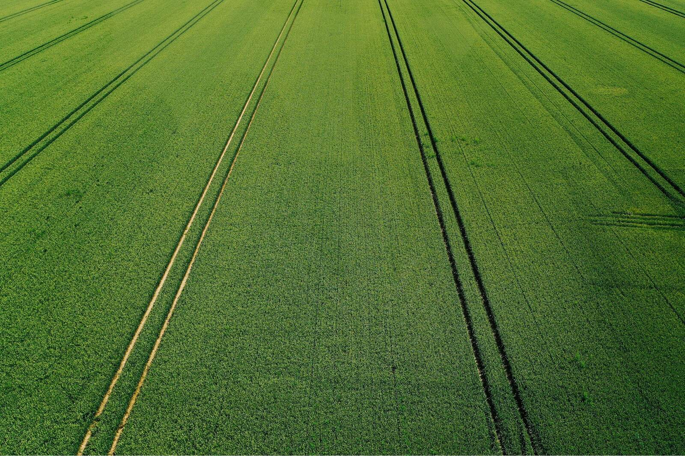

A new home for our laboratory online
Explore the lab’s research, people, teaching, and digital soil health tools in one place.
Read article
Science rooted in the tropics
Understanding tropical soils to support productive agriculture, healthy ecosystems, and better lives.
Our mission
We connect soil processes with practical management to help sustain food production and protect natural resources in tropical agricultural systems.
Led by Dr. Márcio R. Nunes
Director of the Sustainable Tropical Soil Management Laboratory
Tools & innovations
Meet gSHAPE, our web tool for context-specific soil health assessment and benchmarking.

From the lab
Explore the lab’s research, people, teaching, and digital soil health tools in one place.
Read articleOur tool guide introduces the interface, available indicator groups, and steps to get started.
Read articleA study by Biru, Nunes, and collaborators appears in Communications Earth & Environment.
Read articleResearch with Mohkam Singh and Márcio R. Nunes examines soil management assessment across environments.
Read articleA publication in Soil Science Society of America Journal advances soil health interpretation in context.
Read articleA UF/IFAS faculty feature introduces Márcio Nunes’s background and research vision.
Read articleNo announcements in this category yet.
Get in touch
Have a research question or an idea for collaboration?
Connect with Dr. Márcio R. Nunes.
Sustainable Tropical Soil Management Lab
Department of Soil, Water, and Ecosystem Sciences
University of Florida · UF/IFAS
G169 McCarty Hall A
2181 McCarty Hall, PO Box 110290
Gainesville, FL 32611